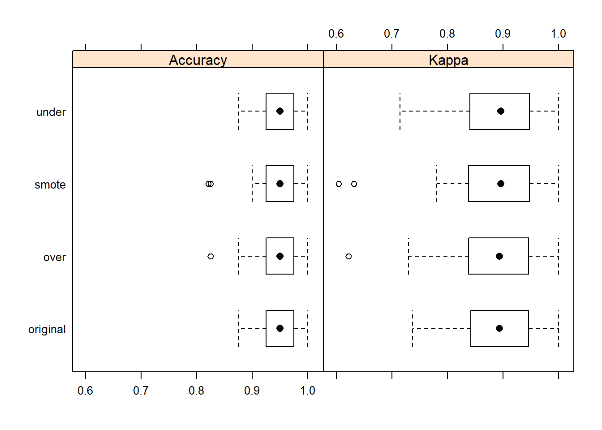
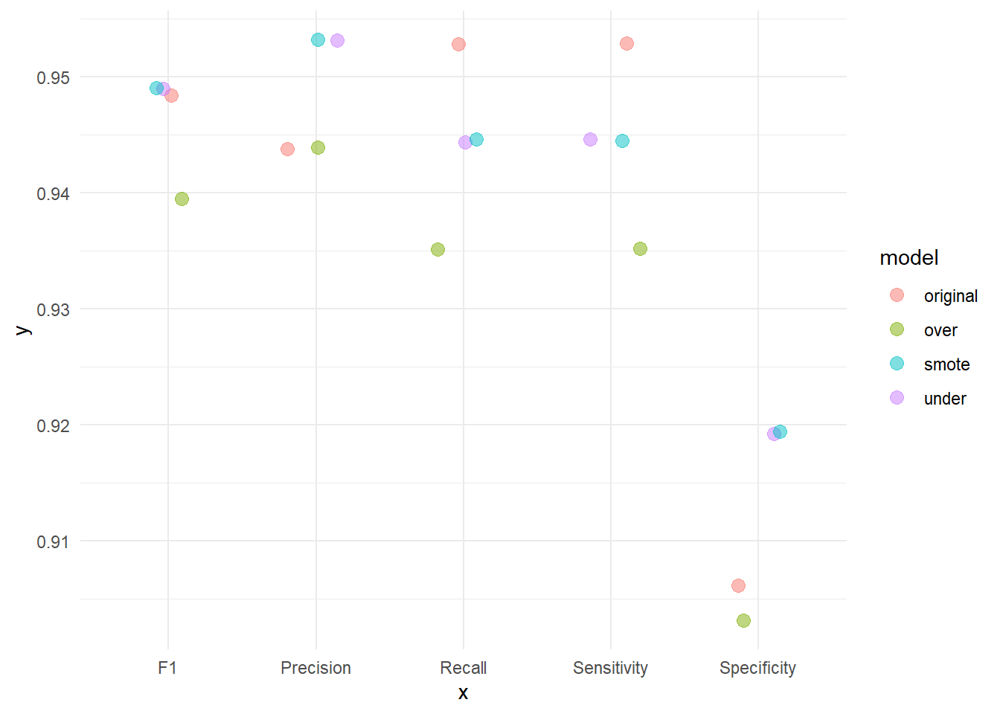

8 Respuesta no balanceada
Cuando nos enfrentamos a problemas de clasificación en datos reales, puede ser un desafío tratar con un caso en el que una clase supera con creces a la otra (también conocidas como clases desequilibradas). En terminos prácticos podríamos, por ejemplo, predecir todos los inviduos como la categoría más frecuente y mejoraríamos la precisión que, como vimos en capítulos anteriores, por azar es del 50%.
Estas son algunas de las técnicas más populares para tratar con el desequilibrio de clases, pero existen más. Proporcionamremos una descripción general rápida.
Asignar pesos a cada clase: imponemos un coste mayor cuando se cometen errores en la clase minoritaria
Muestreo descendente (under-sampling): eliminar observaciones al azar en la clase mayoritaria
Muestreo ascendente (oversampling): replicar aleatoriamente observaciones en la clase minoritaria
Además del muestreo descendente y ascendente, existen métodos híbridos que combinan el muestreo descendente con la generación de datos adicionales. Dos de los más populares son ROSE y SMOTE. El primer método necesita tener instalada la librería
ROSEy el segundo la libreríaDMwR.

Clases desbalanceadas
Si queréis podéis encontrar una descripción más detallada en esta publicación de blog de Silicon Valley Data Science.
Estos métodos también funcionan para los problemas multi-clase. En este artículo tenéis más información general sobre el tema.
Debemos tener en cuenta que, en realidad, no deberíamos simplemente realizar un muestreo descendente o ascendente en nuestros datos de entrenamiento y luego ejecutar el modelo. Debemos tener en cuenta la validación cruzada y realizar un muestreo descendente o ascendente en cada sub-muestra de forma independiente para obtener una estimación real del rendimiento del modelo.
También es importante señalar que estas técnicas de ponderación y muestreo tienen mayor impacto en métricas de evaluación del modelo como la precisión, porque mueven artificialmente el umbral para estar más cerca de lo que podría considerarse como la ubicación “óptima” en una curva ROC. Otras métricas como el AUC o la tasa de falsos o verdaderos positivos no se ven tan afectadas.
Ilustremos cómo llevar a cabo estas técnicas con nuestro ejemplo de cáncer de mama. Usaremos los datos que ya están preprocesados según se hizo en la Sección 5 y que se encuentran en los objetos breast_train_prep y breast_test_prep. Efectivamente, los datos para este problema están desbalanceados respecto a la variable que queremos predecir
table(breast_test_prep$diagnosis)
B M
107 63 Afortunadamente, la librería caret hace que sea muy fácil incorporar técnicas de muestreo descendente y ascendente incluyendo validación cruzada. Simplemente basta con utilizar el argumento sampling en nuestro trainControl() y escoger el método “down” o “up” según nos convenga. El resto del proceso de creación de modelo permanece igual que los pasos llevados con cualquier otro método que hemos visto, por ejemlo KNN.
ctrl <- trainControl(method = "repeatedcv",
number = 10,
repeats = 5,
verboseIter = FALSE,
sampling = "down")
set.seed(1234)
model_knn_under <- caret::train(diagnosis ~ .,
data = breast_train_prep,
method = "knn",
trControl = ctrl)
model_knn_underk-Nearest Neighbors
399 samples
19 predictor
2 classes: 'B', 'M'
No pre-processing
Resampling: Cross-Validated (10 fold, repeated 5 times)
Summary of sample sizes: 359, 359, 359, 359, 359, 359, ...
Addtional sampling using down-sampling
Resampling results across tuning parameters:
k Accuracy Kappa
5 0.9443462 0.8815450
7 0.9483718 0.8893875
9 0.9493718 0.8920609
Accuracy was used to select the optimal model using the largest value.
The final value used for the model was k = 9.cm_under <- confusionMatrix(breast_test_prep$diagnosis,
predict(model_knn_under,
newdata = breast_test_prep))
cm_underConfusion Matrix and Statistics
Reference
Prediction B M
B 102 5
M 6 57
Accuracy : 0.9353
95% CI : (0.8872, 0.9673)
No Information Rate : 0.6353
P-Value [Acc > NIR] : <2e-16
Kappa : 0.8608
Mcnemar's Test P-Value : 1
Sensitivity : 0.9444
Specificity : 0.9194
Pos Pred Value : 0.9533
Neg Pred Value : 0.9048
Prevalence : 0.6353
Detection Rate : 0.6000
Detection Prevalence : 0.6294
Balanced Accuracy : 0.9319
'Positive' Class : B
Podemos comparar esta capacidad predictiva con la que tiene el modelo obiviando el problema del desbalanceo y que se estimaría así:
crtl <- trainControl(method = "repeatedcv",
number = 10,
repeats = 10,
verboseIter = FALSE)
model_knn <- caret::train(diagnosis ~ .,
data = breast_train_prep,
method = "knn",
trControl = ctrl)cm_original <- confusionMatrix(breast_test_prep$diagnosis,
predict(model_knn,
newdata = breast_test_prep))
cm_originalConfusion Matrix and Statistics
Reference
Prediction B M
B 101 6
M 5 58
Accuracy : 0.9353
95% CI : (0.8872, 0.9673)
No Information Rate : 0.6235
P-Value [Acc > NIR] : <2e-16
Kappa : 0.8617
Mcnemar's Test P-Value : 1
Sensitivity : 0.9528
Specificity : 0.9062
Pos Pred Value : 0.9439
Neg Pred Value : 0.9206
Prevalence : 0.6235
Detection Rate : 0.5941
Detection Prevalence : 0.6294
Balanced Accuracy : 0.9295
'Positive' Class : B
Estimemos ahora el modelo con un muestreo ascendente y usando, por ejemplo SMOTE (ROSE sea haría igual usando sampling="rose")
#
# OVER
#
ctrl <- trainControl(method = "repeatedcv",
number = 10,
repeats = 5,
verboseIter = FALSE,
sampling = "up")
model_knn_over <- caret::train(diagnosis ~ .,
data = breast_train_prep,
method = "knn",
trControl = ctrl)
cm_over <- confusionMatrix(breast_test_prep$diagnosis,
predict(model_knn_over,
newdata = breast_test_prep))
#
# SMOTE
#
ctrl <- trainControl(method = "repeatedcv",
number = 10,
repeats = 5,
verboseIter = FALSE,
sampling = "smote")
model_knn_smote <- caret::train(diagnosis ~ .,
data = breast_train_prep,
method = "knn",
trControl = ctrl)
cm_smote <- confusionMatrix(breast_test_prep$diagnosis,
predict(model_knn_smote,
newdata = breast_test_prep))Y podemos comparar las predicciones con la función resamples (para introducir variabilidad)
models <- list(original = model_knn,
under = model_knn_under,
over = model_knn_over,
smote = model_knn_smote)
resampling <- resamples(models)
bwplot(resampling)
O compararlas con otras métricas
library(dplyr)
select_measures <- c("Sensitivity", "Specificity", "Precision",
"Recall", "F1")
comparison <- NULL
for (name in names(models)) {
model <- get(paste0("cm_", name))
comparison.i <- model$byClass[select_measures]
comparison <- rbind(comparison, comparison.i) %>% as_tibble()
}
comparison <- comparison %>%
add_column(model=names(models), .before=TRUE)
comparison# A tibble: 4 × 6
model Sensitivity Specificity Precision Recall F1
<chr> <dbl> <dbl> <dbl> <dbl> <dbl>
1 original 0.953 0.906 0.944 0.953 0.948
2 under 0.944 0.919 0.953 0.944 0.949
3 over 0.935 0.903 0.944 0.935 0.940
4 smote 0.944 0.919 0.953 0.944 0.949library(tidyr)
comparison %>%
gather(x, y, Sensitivity:F1) %>%
ggplot(aes(x = x, y = y, color = model)) +
geom_jitter(width = 0.2, alpha = 0.5, size = 3)